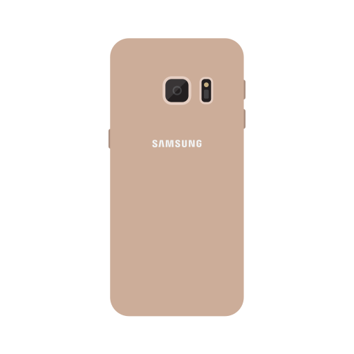

I am in Samsung Page
Samsung was founded by Lee Byung-chul in 1938 as a trading company. Over the next three decades, the group diversified into areas including food processing, textiles, insurance, securities, and retail. Samsung entered the electronics industry in the late 1960s and the construction and shipbuilding industries in the mid-1970s; these areas would drive its subsequent growth. Following Lee's death in 1987, Samsung was separated into five business groups Samsung Group, Shinsegae Group, CJ Group and Hansol Group, and JoongAng Group.